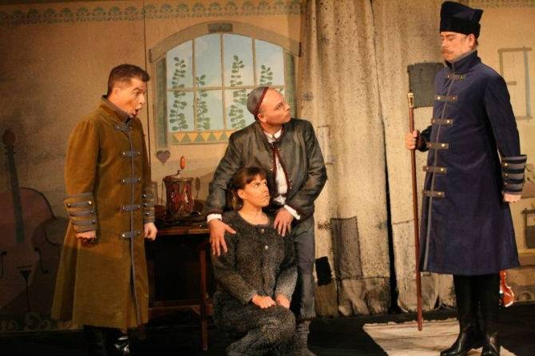

Jag jobbar med rytmik och dans på olika sätt på min firma Dansrytmik. Jag har de mest skiftande uppdrag, alltifrån att dansa på äldreboenden till att spela på folkmusik- och dansarrangemang. Jag jobbar mycket pedagogiskt, men också artistiskt.
Min högskoleexamen har jag från Kungliga Musikhögskolan i Stockholm som musiklärare. Min inriktning var rytmik och min specialisering har varit Modern och Nutida dans som jag har läst och tränat på Danshögskolan. På senare år har jag också dansat en hel del bollywood.
Jag bor numera i Umeå, men är hemma i Haninge och åker en del till Stockholm. På vintrarna åker jag till Mumbai i Indien och tränar kathak och bollywood.
Folknusik ligger mig varmt om hjärtat. Jag spelar svensk folkmusik på fiol och har också studerat svensk och finsk folksång närmare.
Tidigare har jag arbetat en del i skolans värld. Mycket med förskoleklass men mest i Östersund på Ås skola i Krokoms kommun. Där var jag anställd som fritidspedagog, rytmiklärare och danslärare. Efter ett och ett halvt år där slutade jag för att enbart syssla med min egen firma Dansrytmik.
Här är en artikel ur Östersundsposten, ÖP, om ett Skapandeskolaprojekt i dans för årskurs 2 som jag jobbade med på Norra Skolan.
Under hösten 2013 dansade/mimade jag hunden i barnoperan "Chip och hans hund" som gavs i Estrad Norrs regi. Jag var också min egen koreograf. Här är en recension av Malin Palmqvist från Länstidningen:
|  | Liv till salu i sagoland - Recensioner - ltz.seLivet är hårt för instrumentmakaren Chip (Jan Löfgren) och hans älskade hund Gregoria Alexandra Lafayette (Ulrika Karlsson). |
Sommaren 2014 medverkade jag i Norrlandsoperans storslagna uppsättning av "Elektra" som dansare/statist.
Förra läsåret åkte jag runt till förskoleklasser i Umeå kommun och hade fem tillfällen rytmik med dem. Kommande läsår så fortsätter jag med det uppdraget.